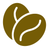

Il nostro impegno di sostenibilità
La trasparenza verso tutti gli stakeholder è il principio base che guida il Gruppo alla redazione annuale del Bilancio di Sostenibilità, un documento che riporta i risultati raggiunti nel percorso intrapreso verso l'integrazione dei Sustainable Development Goals dell'Agenda 2030 delle Nazioni Unite.
Redigiamo il Bilancio di Sostenibilità secondo gli standards definiti dal GRI - Global Reporting Initiative, che costituiscono lo standard attualmente più diffuso e riconosciuto a livello internazionale in materia di rendicontazione non finanziaria.

I 4 princìpi base
La strategia di sostenibilità
Il Gruppo Lavazza mira a offrire prodotti di alta qualità attraverso un modello di business responsabile, basato su innovazione, passione e competenza, secondo un paradigma che integra sostenibilità economica, sociale e ambientale.
Fra i 17 Obiettivi di Sviluppo Sostenibile indicati dall'Agenda 2030 delle Nazioni Unite, sono stati individuati i quattro obiettivi prioritari verso cui sono stati principalmente indirizzati l'impegno ed il sostegno aziendale.
-
del personale assunto stabilmente a tempo indeterminato
Obiettivo 5 - Parità di genere

- 97%
- L'impegno verso le persone
-
giovani formati professionalmente in 20 Paesi
Obiettivo 8 - Lavoro dignitoso e crescita economica

- 700
- Le comunità locali
-
di valore economico distribuito agli stakeholder
Obiettivo 12 - Consumo e produzione responsabili

- 97%
- Una crescita responsabile
- del caffè prodotto in stabilimenti che usano energia rinnovabile
Obiettivo 13 - Lotta contro il cambiamento climatico
- 95%
- La tutela dell'ambiente

Obiettivo 5 - Parità di genere
L'impegno verso le persone
Diversity & Inclusion: il programma Gap Free per la promozione dell’inclusione e la valorizzazione delle diversità è stato esteso a livello globale
- Persone assunte a tempo indeterminato
- 97%
- Dipendenti totali, di cui 39,1% donne
- 5806
- Quota delle donne che ricoprono posizioni manageriali
- 29,7%
- Ore di formazione su Diversity & Inclusion (D&I)
- 40.000

Obiettivo 8 - Lavoro dignitoso e crescita economica
L'impegno per le comunità locali
Community Care, istituito un programma di inclusione sociale esteso a livello globale in 6 Paesi
- Persone formate professionalmente in 20 Paesi
- 700
- Persone coinvolte in Italia in programmi di inclusione
- 5.500
- Progetti di agricoltura sostenibile promossi da Fondazione Lavazza
- 29
- Associazioni coinvolte nel Lavazza Volunteer Program
- 15

Obiettivo 12 - Consumo e produzione responsabili
Una crescita responsabile
Più di 6.000 persone hanno beneficiato di progetti di promozione dei diritti dell'infanzia in Vietnam
- Valore economico distribuito agli stakeholder
- 97%
- Audit etico-sociali in 5 Paesi
- 10
- Caffè verde da fornitori certificati
- 96%
- Valore economico generato
- 3,35 Mld €

Obiettivo 13 - Lotta contro il cambiamento climatico
La tutela dell'ambiente
Continua la roadmap del packaging sostenibile, ed il processo di decarbonizzazione e ricerca della biodiversità
- Caffè prodotto in stabilimenti 100% energia rinnovabile
- 95%
- Emissioni di CO2eq rispetto all'anno 2023
- -9%
- Packaging riciclabile
- 81%
- Progetti di agricoltura rigenerativa
- 3
Scarica il Bilancio di Sostenibilità 2024
e scopri il nostro impegno per un futuro senza disparità, senza barriere, senza gap da colmare
Archivio dei Bilanci di Sostenibilità
Confronta i Bilanci di Sostenibilità degli anni precedenti.


Analisi dell'impatto ESG nel tempo
| 2022 | 2023 | 2024 | |
|---|---|---|---|
| Le Persone al centro | |||
| Dipendenti donne | 37,4% | 39,47% | 38,6% |
| Numero di donne assunte | 284 | 329 | 483 |
| Ore di formazione pro capite | 16,5 | 16,6 | 11,9 |
| Le comunità locali | |||
| Associazioni di volontariato | 15 | 14 | 15 |
| Beneficiari di programmi di formazione | 380 | 600 | 700 |
| Paesi coinvolti in programmi di inclusione sociale | 16 | 19 | 20 |
| Una crescita responsabile | |||
| Valore economico distribuito | 2,60 Ml € | 3,05 Ml € | 3,29 Ml € |
| Retribuzioni e benefit distribuiti | 356.636 € | 414.322 € | 479.668 € |
| La tutela dell'ambiente e delle risorse | |||
| Emissioni dirette da energia elettrica tCO2eq = tonnellate di anidride carbonica equivalente | 42.767 tCO2eq | 40.061 tCO2eq | 38.534 tCO2eq |
| Materiali utilizzati nel packaging t = tonnellate | 30.448 t | 29.950 t | 29.158 t |
| Consumo idrico nella lotta alla deforestazione ML = Milioni di Litri | 91,8 ML | 77,9 ML | 76,8 ML |
Il Manifesto di Sostenibilità
Scopri la via scelta dal Gruppo Lavazza per l'inclusione attraverso il percorso Gap Free, che mira alla promozione delle pari opportunità e alla valorizzazione delle diversità.
Un percorso strutturato, di medio-lungo periodo, per raggiungere l'eliminazione di ogni tipo di discriminazione, attraverso le tre fasi di ascolto e ricerca, co-design e co-creazione, deployment del piano di trasformazione culturale aziendale